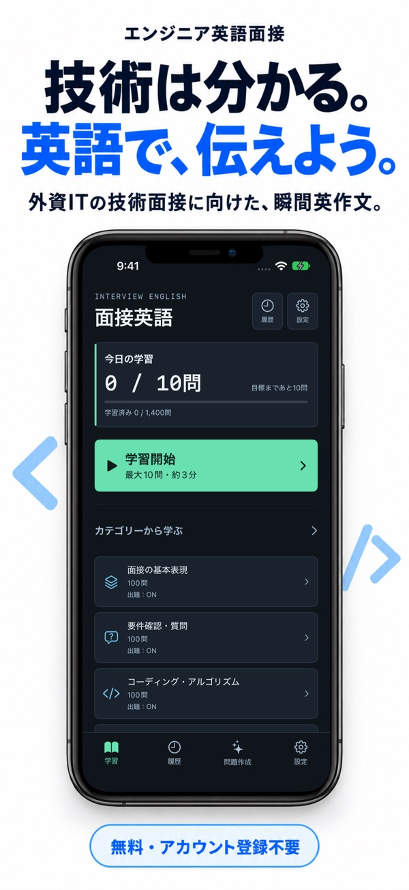
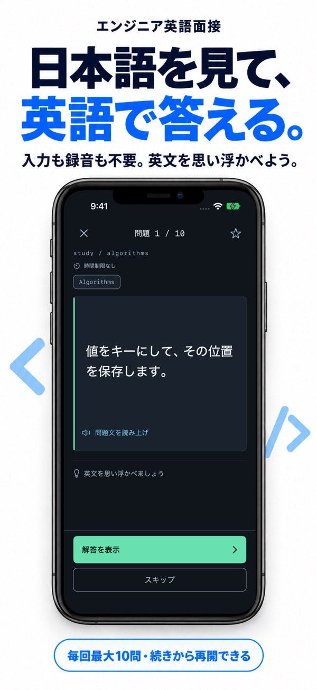
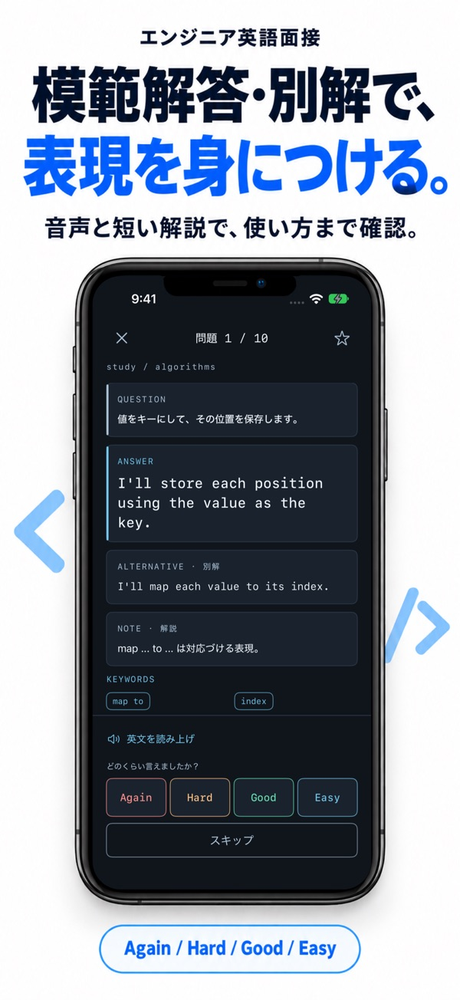

日本語から英文を考える
問題を読んで、英文を思い浮かべるか声に出します。模範解答・別解・短い解説で表現を確認できます。
外資ITの技術面接に向けた瞬間英作文
コーディング面接や開発経験の説明で使う英語を、日本語から組み立てる。毎回最大10問、模範解答と比べながら面接の表現を練習できます。

特徴
問題を読んで、英文を思い浮かべるか声に出します。模範解答・別解・短い解説で表現を確認できます。
Again・Hard・Good・Easyで振り返ると、間隔反復アルゴリズムFSRSが次の復習予定を調整します。
説明したいテーマから5問または10問のフレーズを作成。保存後は通常の学習や復習に含められます。
まず、総当たりの方法から考えてみます。
Let me start with a brute-force approach.
日本語を見て英語で考え、模範解答と比べます。
はじめて使う方へ
回答時間は初期値10秒。時間を変えたり、制限なしにしたりできます。
英文入力や音声認識は不要です。「解答を表示」で模範解答や別解と比べます。
4段階で評価します。途中で閉じても、続きから再開できます。


自動採点ではありません。模範解答を見て、自分でAgain・Hard・Good・Easyのいずれかを選びます。英文入力や音声認識も不要です。
面接の基本表現、要件確認・質問、コーディング・アルゴリズム、実装・デバッグ、面接官との対話、経験・実績、企業への逆質問の7カテゴリーに、各100問を収録しています。
現在の公開版は無料で、広告・アプリ内課金・アカウント登録はありません。「準備中」のカテゴリーは利用できません。
時間切れになっても、解答の表示は手動です。自分で考えてから確認できます。